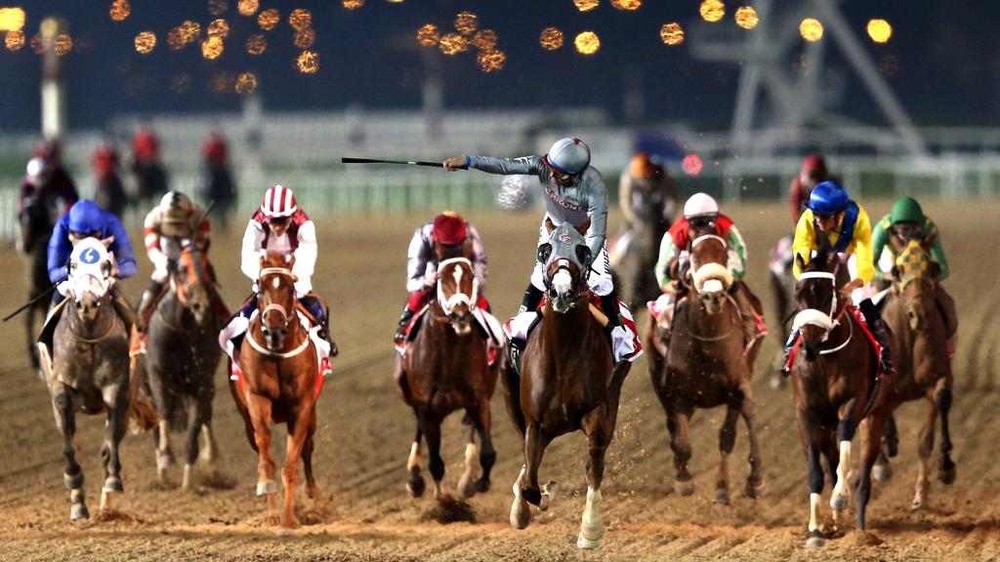

Events
One’s mind jumps to a world of magic and fantasy when it comes to UAE, the country which has
changed over a short period of time from vast areas of sand into a vibrant city and a destination visited by a constantly increasing number of tourists.
Major Festivals
Festivals and events in Dubai continue round the year.
Dubai Shopping Festival (DSF)
In January every year, Dubai Shopping Festival (DSF) kicks off under the banner “One World…One Family”, bringing with it a vast array of discounts, competitions, prizes,
fireworks, fun and entertainment. By providing stunning discounts to shoppers, the DSF attracts tourists seeking extraordinary deals from all over the world. The DSF was
launched in 1996 as an initiative by Dubai Government to promote trade exchange but it is expanding and developing year after year. It is not merely a retail festival but a
festival for all family members as
well.
The Global Village
Around the world in a day at Global Village
Dubai’s original family shopping and entertainment destination, Global Village, returns every year for exciting edition of round-the-world fun.
Unbeatable shopping
The best buys in one exciting place
With 27 pavilions, representing more than 75 cultures, you’ll be spoilt for choice. Tickets are priced at AED15 with children under three and senior citizens over 65 entering
for free, so there's no reason for you to miss experiencing the international marketplace that is Global Village. Fill your bags with traditional spices from India, Hello Kitty
stationery from the Far East, matryoshka dolls from Russia, wood carvings from Africa, fashionable finds from Europe and more. The hand-crafted rugs from Iran and
precious sidr honey from Yemen are proving to be big draws this season. From 4 pm to midnight on weekdays and from 4 pm to 1 am on weekends and public holidays.
GITEX Technology Week
GITEX Technology Week is one of the largest IT exhibitions in the world and is held annually in Dubai to showcase the very latest in ICT and eServices.
Dedicated Festivals
Dubai organizes world class festivals throughout the year. These range from the Dubai International Film Festival
to the Dubai Desert Classic for golf fans.

The Dubai World Cup for racing fans
Meydan Racecourse, home of the US $35 million Dubai World Cup card, will host its first race meeting of the 2018-19 season on Thursday, November 1.
The UAE season is highlighted by the 24th running of Group 1 $12 million Dubai World Cup sponsored by Emirates Airline, the namesake event and centre piece of the world’s richest day of horseracing (Saturday March 30, 2019).
Join us for one of our Thursday evening race meetings or Saturday afternoon cards, where we offer our Terrace brunch for excellent value. Enjoy our luxurious hospitality and exciting racing action as we build towards the world's richest race day! For more information on all the Dubai World Cup and racing season packages, visit the Meydan.
Dubai Duty Free Tennis Championships for Tennis Fans
The Dubai Duty Free Tennis Championships is one of the most eagerly anticipated events on the UAE sporting calendar and one of the most popular
tournament stops for the ATP World Tour and the WTA Tour.
Dubai Airshow for Aviation fans
The 2019 edition of the Dubai Airshow will once again bring the aerospace community together.
Show on show, the Dubai Airshow delivers an unrivalled gateway to established and developing markets – with 80% of the world’s population located within eight hours of one of the UAE’s airports this is where the industry comes to make connections.
“The Dubai Airshow is one of the best networking events in the world. Strategically the Middle East is very important as its the gateway to the world… the requirements are very high and the customers are very sophisticated.” Adam Thomas, Senior Press Officer, The Department for International Trade Defence and Security Organisation (DIT DSO).
Join over 87,000 attendees from across the globe
Browse products and solutions from 1,300 exhibitors
View up to 165 Aircraft on the static park
 The Qasr Al Hosn Festival
The Qasr Al Hosn Festival
Held under the patronage of His Highness Sheikh Mohamed bin Zayed Al Nahyan, Crown Prince of Abu Dhabi and Deputy Supreme Commander of the UAE Armed
Forces, the Qasr Al Hosn Festival features a rich cultural programme that is inspired by two central themes: Abu Dhabi’s traditional heritage, and the contemporary
significance of the emirate. These themes are showcased in the grounds of Qasr Al Hosn, the Cultural Foundation Building and the Qasr Al Hosn Exhibition through a
variety of programmes and activities.
The festival grounds host a variety of experiences for all ages, encouraging them to learn about and celebrate the heritage of Abu Dhabi and the UAE.
The Qasr A Hosn Exhibition is open to general public all year round.
Website: qasralhosnfestival.ae
Frequency: Annual
Duration: 10 days
Location: Qasr Al Hosn
Visitors: 140,000
Sharjah Lights Festival
A unique event designed to capture the imagination of all, as well as highlight Sharjah’s distinguished landmarks and historic buildings. This breath-taking and
electrifying nine-day-February event floods Sharjah with light and colour, and celebrates the art of drawing with light and combines imagery with captivating music to create
an exhilarating experience.
Mother Of Nation Festival
The Mother of the Nation Festival celebrates, commemorates and honours the inspirational values of HH Sheikha Fatima bint Mubarak.
Through multiple and diverse activity zones, the festival creates an entertaining and interactive atmosphere that welcomes families and individuals from all walks of life.
HH Sheikha Fatima Bint Mubarak, the wife of the late Sheikh Zayed Bin Sultan Al Nahyan, the founding father of the UAE, has been a pioneer in supporting the efforts exerted towards women’s empowerment and rights.
Website: motn.ae
Frequency: Annual
Duration: 10 days
Location: Abu Dhabi Corniche
Tickets: Ticketed
Visitors: 133,581
Sharjah International Book Fair
Sharjah International Book Fair (SIBF), a subsidiary of the Sharjah Book Authority (SBA), is one of the largest book fairs in the world, the most prestigious in the Arab world
and home to the most exciting literary event in the region.
Inspired by love of the written word, the SIBF seeks to spread the joy of reading, promote cross cultural understanding and bring the finest talent in publishing to the
Middle East from all over the world. It is here that the finest books are showcased at affordable prices.
The fair not only provides an opportunity for book lovers to acquire literature at great prices but is also a perfect platform for authors and publishers to meet and discuss
current trends and potential opportunities to work. The festival scheduled in month of November is a true treat for a book lover.